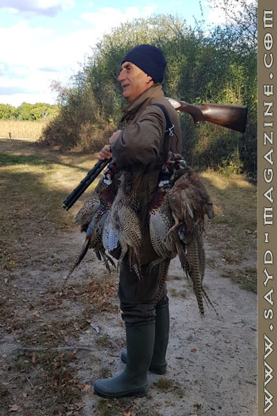
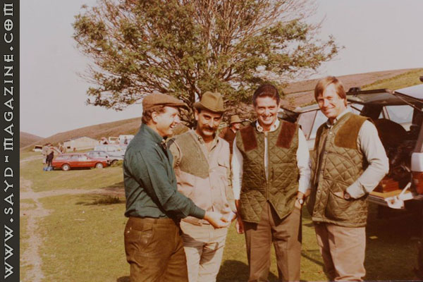
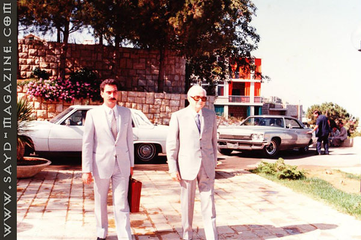
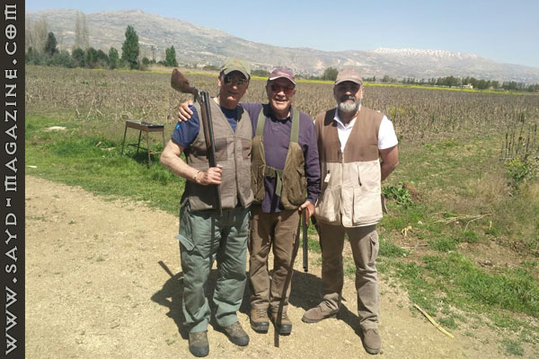
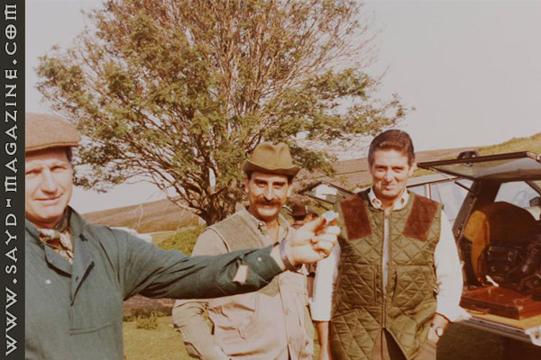
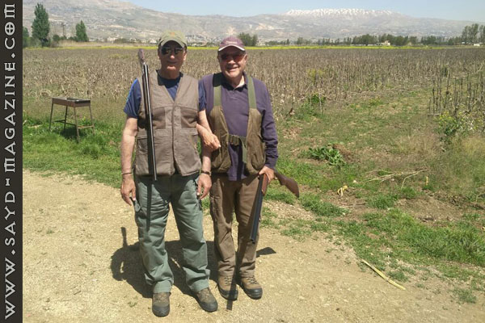
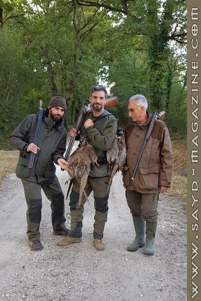
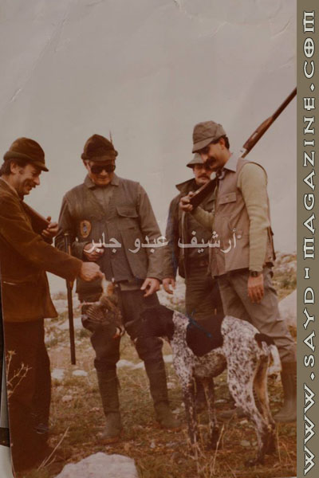

ليس صيادًا عاديًّا ولا شخصًا مرّ في الحياة دون بصمة، فهو الحارس الظل لفخامة الرئيس الراحل كميل شمعون، في كل خطوة له وتنفس. وقد تعلمّ الصيد وآدابه على يديه، فنشأ على حب الطبيعة واحترام كائناتها، مارس الصيد بنكهة التحدي لا بنكهة الجوع النفسي للقتل ولا الاستعراض الفارغ. وهو بهذا يُمثِل شريحة أصبحت نادرة في لبنان وهي شريحة يدعى الصياد فيها "شيخ الصياده".

قال في المقابلة:صياد الأمس كان يهتم لرحلة الصيد بكل تفاصيلها ويتفاعل مع الطبيعة من مشي وتمتع بمناظر وخبرة في التعامل مع الأرض، أما اليوم فأرى أن الصيادين يهمّهم إطلاق النار وقتل أكبر عدد من الطيور.
- رافقت الرئيس المرحوم الذي كان يلقّب بـ"الفتى العربي الأغرّ" في رحلات صيده، تعلّمت منه أدب وفن الصيد، وأهمية المظهرواللياقة في التعاطي.
- أعتبر الرئيس شمعون أمير الصيد ومخترع أدبياته في لبنان.
- كنت مرافقه وصديقه.. كان يعاملني كالابن والقريب بدماثة طبعه وعنفوان شخصيته.
- كنت أذهب، ولا أزال في لبنان، إلى رحلات صيد خاصة من جزين إلى عكار، إلى الكورة إلى البقاع وخارج لبنان إلى رومانيا، صربيا، فرنسا، مصر، إسبانيا، بريطانيا، تونس، اسكوتلندا...
- أُحب أن أصطاد بسلاحي Merkel والـSkb والرئيس هو من علّمني على اقتنائهما، وهما من الأسلحة العريقة الغير مألوفة والمعروفة من الكثيرين.
- لديّ هواية وشغف في جمع البنادق، وأتبادل هذه الهواية مع الوزير الصديق نقولا تويني الذي دفعني لتجربة الأسلحة الروسية من نوع mc وأيضًا السلاح الإيطالي الشهير Perazzi.
- بدأت الصيد في عمر الـ11 عام ببندقية "الخردقة" وأيضًا بـ"النقيّفة".
- علّمت الصيد لأولادي الشباب ونذهب سويةً إلى الصيد دائمًا.
- أستمتع بالصيد في الخارج، لأن في لبنان أَصبح من يُمارسون الصيد أكثر من أعداد الطيور.
- ثمة طرفة حدثت معي حين ذهبت للصيد في رومانيا بصحبة الوزير نقولا تويني وزوجته، فحين وصلنا إلى الفندق بعد رحلة طويلة، رأيت مجموعة من الصيادين اللبنانين يتحضرون لرحلة الصيد وبينهم شخص يتلفت يمينًا وشمالاً بإضطراب فسألته عن مشكلته، فقال إنه نسي حذاء الصيد الخاص به، فأعطيته حذائي ووعدني أن يعيده حين يرجع من الرحلة، فرجع ولكن الحذاء لم يرجع حتى اليوم.
- من أروع الأحداث التي عشتها في الصيد، رؤية ملايين طائر من الأوز البريّ عند الفجر فوق نهر الدانوب.
- المرأة قد تكون أفضل من الرجل في الصيد وأناقة الصيد، وقد تعرفت والرئيس إلى آنسة خلال رحلة صيد وكانت ماهرة جدًّا.
      